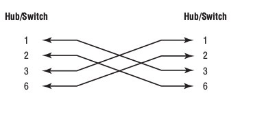

ប្រភេទដំណភ្ជាប់ទំនាក់ទំនង¶
ដូចដែលបានរៀបរាប់ខាងលើ ប្រភេទខ្សែកាបtwisted-pairមានពីរប្រភេទ គឺUTP & STP។
- ហើយក្នុងនោះដែរUTP ក៏ចែកចេញជា៤បីប្រភេទទៀតគឺ
- Straight-through cable
- Crossover cable
- Rollover cable
ខ្សែកាបStaight-through¶
- ប្រភេទនេះប្រើសំរាប់ក្នុងការភ្ជាប់
- Host/computer to switch or hub
- Router to switch or hub
ហើយខ្សែ៤តែប៉ុណ្ណោះត្រូវបានប្រើក្នុងការភ្ជាប់ឧបករណ៍Ethernet។ គឺខ្សែលេខ ១ ២ ៣ និង៦។ ដោយគ្រាន់តែភ្ជាប់ខ្សែលេខ 1-1, 2-2, 3-3 និង 6-6។ .. Note:: ចំពោះកុំព្យូទ័រ និង Router ខ្សែទី១ និងទី២សំរាប់បញ្ជូនទិន្ន័យ រីឯខ្សែទី៣ និងទី៦សំរាប់ទទួលទិន្ន័យ។ Hubs & Switch ប្រើខ្សែលេខ ១ និង២ ដើម្បីទទួលទិន្ន័យ ឯខ្សែទី ៣ និង៦សំរាប់បញ្ជូនទិន្ន័យ។ នេះជាមូលហេតុដែល ប្រសិនបើអ្នកចង់ភ្ជាប់កុំព្យូទ័រទៅ កុំព្យូទ័រត្រូវប្រើខ្សែកាបcrossover។ គួចំនាំថា ប្រើសំរាប់តែខ្សែកាបEthernetប៉ុណ្ណោះ វាមិនដំណើរការជាមួយ voice, Token Ring, ISDNនោះទេ។
ខ្សែកាបCrossover¶
- ខ្សែកាបcrossoverប្រើសំរាប់ភ្ជាប់
- Switch to switch
- Hub to hub
- Hub to switch
- Host to host
- Router direct to host
ចំពោះការតភ្ជាប់វិញគឺ ខ្សែទី១ភ្ជាប់ទៅខ្សែទី៣ ខ្សែទី២ភ្ជាប់ទៅនឹងខ្សែទី៦ រវាងផ្នែកនីមួយៗ។
ខ្សែកាបRollover¶
ខ្សែកាបប្រភេទនេះ មិនប្រើសំរាប់ភ្ជាប់ទៅEthernetជាមួយគ្នានោះទេ តែអ្នកអាចប្រើសំរាប់ភ្ជាប់Ethernetដើម្បីភ្ជាប់hostទៅនឹងrouter console serial communication (com) port។